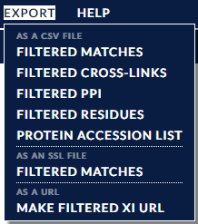

Xi View contains many different ways to view cross-link data, from circle plots, protein network views, protein sequence views and tables, to raw spectra and peak views. Data can be filtered and exported, as can images. PDB datasets can be incorporated to give physical context to the cross-links, enabling 3D and contact map views, with automatic alignment performed between Xi and PDBÂ sequences.
This documentation is divided into four logical sections:
One of the main benefits of XiView is the ability to filter the dataset based on various attributes. A description of the full set of the available attributes and operations can be found here on the Filter Bar page. Changes to the filtered dataset are immediately reflected in all open views.
The dataset loaded from the history page can be augmented with the addition of metadata for the cross-links and proteins. This can be performed via the 'Load' menu in the top menu bar which offers five different methods for incorporating metadata:
There are a number of different views available for exploring cross-links within Xi View. One, the XiNet view, is a constant in the main window of xiView. The others are available via the "View" drop-down menu in the menu bar along the top of the window.
The views themselves can be categorised as three basic types:
Those that show positional cross-link data:
Those that show cross-link metadata:
Those whose main purpose is to act as sanity checks:
The Legend View can be considered in a category of its own, its main function is to choose and refine a colour scheme used in the rest of the Xi View interface.
All views also share a number of common operations and functionalities such as filtering and selection.
The Selected Match Table acts as the bridge to the underlying raw data displayed in the Spectrum View - open the xiSpec Feature Support section in this link for spectrum viewer use instructions. Selecting a match in this table will displaying the underlying raw data in the Spectrum View.

The Export menu in the top menu bar has a number of options for outputting various aspects of the current filtered dataset. Simply click the required option and the exported file will be downloaded to your computer.
Filtered cross-links, matches, protein-protein interactions, residue pairs and protein accession numbers can all be saved as CSV files, and filtered matches can also be saved in Skyline's SSL format. The final option "Make Filtered Xi URL" offers the option to export a URL that includes the current filter state. Upon re-opening in a browser this URL will set the filter to the values in the URL as a convenient shortcut.
Finally, almost every view has the option to save their current representation as a SVG or PNG file, which again includes a timestamp and filter state within the filename. Most of the exported images also include a colour key, and most views generate SVG images that include a link to return to the search.